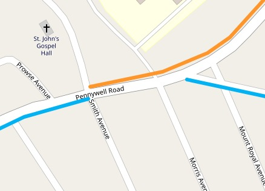

In late fall 2020, the City of St. John's released revised sidewalk clearing priorities for the coming 2020-21 winter season. These were in response to consultations and surveys with citizens over the course of spring and summer 2020. They were touted as a feasible measure to make sidewalk clearing more effective without impacting the city's budget.
The rationale for the revised priorities apparently was to reduce the size of Priority 1 so that it would, at the very least, be cleared promptly after each snow fall.
Summary
Other than reducing Priority 1 somewhat, and the move of School zones into Priority 1a, there doesn't seem to be much fundamental change with these revisions.
Here's a list of discernible notable changes from the previous priorities, in no particular order:There are now two new levels:
- 1a - for the old school zones (orange on the map)
- 4 - mostly consisting of the old priority 3 streets
Extensions & Additions:
- Old Pennywell from Columbus Dr. to Brier Ave
- Kenmount to Pippy Place
- Blackmarsh from Columbus to Hamlyn Road
Removals:
- None discernible
Notable Changes:
- Monkstown Rd. to Priority 2
- Empire & Bonaventure & Mayor 'triangle' to Priority 1
- Parade St. to Priority 3
- Patrick St. south of Hamilton Ave. to Priority 1a
- University Ave from Prince Philip to Paton St. to Priority 1a
- Hutton Rd. to Priority 4
- Intersection of Portugal Cove Rd. and Newfoundland Dr. / Prince Philip to Priority 1a
Review & Analysis
Despite the city's rationale for revising the priorities, real issue is whether or not the revisions guarantee or aid mobility within the city over the course of the snowy months. There's very little indication that this is the case. It seems that city planners simply don't want from point A to point B, or at the very least don't consider ease of movement in pedestrian areas to be a rationale for priority clearing. Several examples are easy to spot:
Unconnected Priority 1a / School Zones
Three schools remain unconnected to the larger Priority 1 network - Vanier Elementary on Ennis Ave., the District School south of St Clare, and St. Theresa's on Mundy Pond Rd.
While Vanier is in a largely residential side street, and its school yard accessible via a footpath off of Rumboldt Place, St. Theresa's is on a major street with heavy traffic. At the very least the north side of Munday Pond Rd. should be Priority 1. Similarly, the north side of Campbell Ave south of Cashin Ave. should be Priority 1, at least to St. Clare.
Gaps
- Prescott St. between Duckworth and Water - there are stairs here, which may fall to the other unit for clearing?
- All of Waldegrave St.
- Pennywell Rd. between Smith Ave and Golf has Priority 1a on the northside, but on the south remains uncleared, despite the obvious utility of connecting the southside Pennywell Rd. Priority 2 route to the top of Golf Ave. 
Flip Flops
No clear reason why the sides flip. Perhaps there's an obstruction...
- Stamps Lane south of Freshwater Rd. is on the west side, while south of Wishingwell, is on the east.
- Allandale Rd. to Bonaventure Ave.
- New Cove Rd. at Elizabeth Ave.
- Torbay Rd. at Newfoundland Dr.
- Brookfield Rd. at Cormack St.
Other Oddities
Logy Bay Rd. still has a Priority 1 area just north of Hutton Rd. (see the map of Vanier above)
Suggestions
Principles for Reprioritization
- Prioritize clearing of routes to Bus Stops in high pedestrian areas, e.g. Elizabeth Ave. south of Memorial's main campus - the site of a fatal accident in winter 2020
- Connectivity & Crosswalks. Pedestrians shouldn't have to flip flop sides without good reason. It's likely better to have a single side cleared more consistently, than worry about double sided clearing. Flip flops should only occur if there's an obstruction, and they should occur at clearly identified crosswalks or intersections, not in the middle of a major street (e.g. Pennywell Rd.)
- Where do people walk?!
New Routes
- Mayor Ave. from Empire to Freshwater - should be Priority 1 or Priority 2 to add a major link with more population than the Newtown Road route, which could go to Priority 3.
Unnecessary Double Sides?
Remove double sided clearing on mainly residential streets, and reprioritize the workload accordingly:- Rodney St.
- Newtown Rd.
- Strawberry Marsh Rd.
- Elizabeth Ave from Torbay Rd. to Rumboldt Place
- Vinnicombe St.